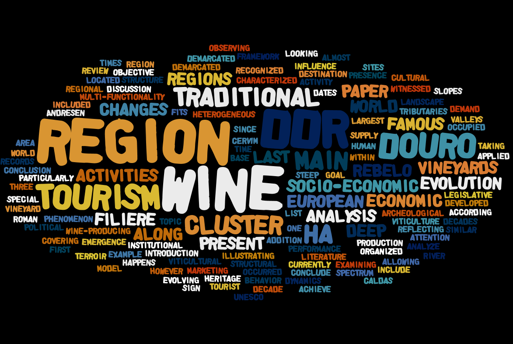
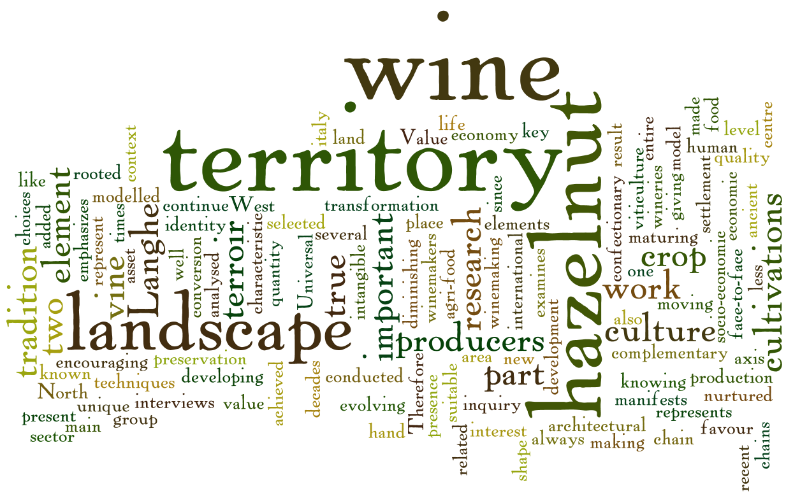
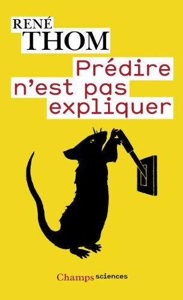

Session 4
Terroir Wines and the Global Market
Session 4
Terroir Wines and the Global Market
- The Douro region: wine and tourism ⇒ João F. REBELO, Alexandre GUEDES, José CALDAS
- The vine and the hazelnut as elements of characterization of a Terroir ⇒ Alessio LAZZARI, Danielle BORRA, Stefano MASSAGLIA
- Time stability of visitors’ preferences for preserving the cultural landscape Alto Douro Wine Region ⇒ Lina LOURENÇO-GOMES, João F. REBELO
- About long-time and vine quality modelisation : Epistemological approach to geographical viticulture ⇒Etienne DELAY, Marius CHEVALLIER, Cyril PIOU, Eric ROUVELLAC
The Douro region: wine and tourism
João F. REBELO, Alexandre GUEDES, José CALDAS
wine-filiere, Multi-functionality of vineyard, tourism behavors...
The vine and the hazelnut as elements of characterization of a Terroir
Alessio LAZZARI, Danielle BORRA, Stefano MASSAGLIA
vine, hazelnut, Piemont, virtuous circle
Time stability of visitors’ preferences for preserving the cultural landscape Alto Douro Wine Region
Lina LOURENÇO-GOMES, João F. REBELO

Prortuguese visitor expectations, Discrete choice experiments questionnaire,diachronic study
About long-time and vine quality modelisation.
Epistemological approach to geographical viticulture
E. DELAY / laboratoire GEOLAB UMR 6042 CNRS / Twitter : @ElCep M. CHEVALLIER / laboratoire GEOLAB UMR 6042 CNRS C. PIOU / CIRAD, UMR CBGP E. ROUVELLAC / laboratoire GEOLAB UMR 6042 CNRS Xth International Terroir Congress / Cultural and Conference Centre - Tokaj - Hungary 7-10 July 2014
Introduction
Quality : what is the paradigm ?
an oposition between continuous history ⇆ discrete history ?
Foucault 2008
crédit photo : Ding Yuin Shan on Flick'rR. Dion 1896 - 1981
partsant of an historical continuity
“Roger Dion, né le 28 octobre 1896 à Argenton-sur-Creuse et mort le 19 septembre 1981 à Neuilly-sur-Seine, est un géographe et historien français.”
He produced a large number of major scientific works (almost in France), particularly in vine and wine geography, which remain valid today.
A sort bibliographie
- “Querelle Des Anciens et Des Modernes Sur Les Facteurs de La Qualité Du Vin”. Annales de Géographie 61, no. 328 (1952): p417–431
- Histoire de la vigne et du vin en France : des origines au XIXe siècle, Paris, Clavreuil, 1959, 770 p. (réédition, Paris, Flammarion, 1991 - réédition, Paris, CNRS, 2010)
- Le paysage et la vigne. Essais de géographie historique, Paris, Payot, 1990, 296 p.
- "Géographie argentonnaise", in Argenton et son histoire, n° 14, 1997, Cercle d'histoire d'Argenton, Argenton-sur-Creuse
Revisit R. Dion...
Work initiated in response to A. Banos and al. article on cybergeo. They propose to revisit the classic works of geographical theories with Agent Based Modele (ABM) help.
Propositions :
- “si les fondateurs de nos vignobles avaient été aussi dociles qu'on le dit aux suggestions de la nature, ils se fussent bien gardés d'aventurer leurs plantations hors de la région méditerranéenne […]” (p429)
- “avant les chemins de fer, les plus belles possibilités de débit, celles qu'assuraient les grands marchés de l'Europe septentrionale, où le vin se vendait au plus haut prix, étaient limitées aux abords des ports maritimes, des rivières navigables et de quelques grandes routes de terre, aptes aux charriots lourds” (p419)
- ...
... by modelisation
“un modèle est une abstraction qui simplifie le système réel étudié [...], pour se focaliser sur les aspects qui intéressent le modélisateur”
P. Coquillard et D.R.C. Hill 1997
“un modèle a pour fonction d'être un instrument de facilitation d'une médiation”
M.S. Morgan et M. Morrison 1999
We want to ask about 3 points (at least)
- what is the place and what are the contours of the quality concept ?
- Is the concept of quality has spatial implications?
- Does the concept of quality is protean/multifaceted in time?
Posture
“Growing Artificial Societies from Bottom Up”
J.M Epstein et R. Axtell 1996
Dans cette lignée nous avons :
- travaillé sur un monde et des sociétés virtuels
- autour d'un individualisme méthodologique
- réduit le système à des interactions essentielles strictement décrites dans l'article de Roger DION (1952)
Agents Based Modeling (ABM) : Definition
“Un agent est une entité physique ou virtuelle
- capable d'agir dans un environnement
- mue par un ensemble de tendances (sous forme d'objectifs)
- capable de percevoir (de manière limitée) son environnement
- dont le comportement tend à satisfaire ses objectifs”
J. Ferber 1995
It's a petri dish for social scientists
crédit photo : Y tambe in wikimedia commons{kind=link}
Prediction ≠ Explain
“L'expérimentation par elle même ne peut guère conduire à des progrès [...]. Elle peut permettre de contrôler que si on à une théorie, donc si l'on dispose d'outils d'exploration. La théorisation [...] est liée à la possibilité de plonger le réel dans un virtuel imaginaire, doté de propriétés génératives, qui permettent de faire des prévisions”
R. Thom 2009
Materials and methods
basic principles
Formalization / simplification of R.Dion assumptions :
- A territory with a unique exterior purchaser
- the wine price is fixed regardless of the imbalance between supply and demand
- wine quality is a time function
Complexification of Von-Thünen (1826) assumptions :
- unequal soil fertility
- multiplicity of urban markets (local negociants)
- based on the marginal productivity
{kind=link}
who are Agents ?
- exterior purchaser (obj : buy wine with a max price and quantity)
- local negociants (obj : respond to external demand with a wine production)
- vine plots (obj : wine production)
What is behind
Free software time !
- An Agent Based Model on Netlogo
- a sensitivity analysis with OPENMOLE on CALI
- an exploration of current results with R
 crédit image : GNU fondation
crédit image : GNU fondation
Some results
A territory in autarky
“ Quiconque avait un rang cultivait la vigne pour l'honneur autant que pour le profit, en sorte que seul la présence d'un château ou d'une bourgade rehaussée de quelques maisons opulentes suffisait à faire apparaitre un vignoble qui restait nécessairement petit quand le site était peu propre au commerce”
R. Dion p426
crédit photo : Etienne DELAYA territory in autarky
And when the market exists?
“ A la même époque, et sous un climat sensiblement plus chaud que celui d'Orléans, restaient inemployées, sur les versants des vallées de la Champagne berrichonne, de grandes étendues de sols calcaires, pierreux et secs, où la vigne eût donné sans difficulté de fort bons produits. Mais la difficulté que l'absence de voies navigables s'opposait, en ce pays, à l'exportation des vins, y contrariait l'éveil des vocations et des ambitions viticoles.”
R. Dion p419
crédit photo : Ancoline on Flick'rWhat about quality ?
“ Là où faute de communications suffisantes, s'évanouissait l'espoir d'une vente lucrative sur les marchés lointains, disparaissait aussi l'émulation qui incitait les viticulteurs à relever la qualité de leurs produits”.
R. Dion p419
“ Il faut que la côte de Champagne en ait reçu d'innombrables [améliorations] pour qu'un agronome ait pu dire des vignes de ce lieu fameux qu'elles poussent « dans un sol artificiel qui a fini par acquérir, à force d'apports incessants, une constitution qui favorise à un haut degré leur prospérité.» ”
R. Dion p421
crédit photo : Etienne DELAYWhat about quality ?
A homogeneous world does not exist!
“ Au moyen âge les bourgeois de Caen et de Rodez [ont] voulu, comme ceux des autres villes, avoir leur vignoble [...], ils ont donc recherché tout ce que le territoire dépendant de leur ville pouvait contenir d'emplacements naturellement favorables. Ceux de Gaen ont trouvé pour leurs vignes, sur les coteaux d'Argences, à 18 km. ”
R. Dion p428
“ Sous le Second Empire encore, le Dr Guyot, dans son Étude des vignobles de France, signale que les vignes les mieux cultivées du département de la Haute-Saône sont celles qui couvrent les pentes mêmes de la hauteur de Vesoul ”
R. Dion p427
crédit photo : Etienne DELAYA homogeneous world does not exist!
Conclusion
“ Il faut, pour comprendre les faits, les voir sous leurs deux aspects, dont l'un exprime la résistance, et l'autre la soumission aux conditions naturelles. Plus la résistance est audacieuse et plus elle exige de souplesse dans l'utilisation des possibilités du terrain. ”.
R. Dion p428
Conclusion
This work questions about order and implication of phenomena in the quality construction process
- soil, climate, are not denied,but replaced in the rigth scale
- quality could be a function of time: "plausibility principle"
- AOC/IGP could be a measure of spatial segregation